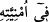

gönderdiği insandır. Rasûlde, nebînin aksine, kendisine kitap verilmiş olması şart
koşulmuştur. Nebî daha umûmîdir. Şu rivâyet de bunu desteklemektedir:
Nebî (a.s.)’a peygamberlerin sayısı sorulunca “Yüz yirmi dört bin.” buyurdu.
“Onlardan kaçı rasuldür?” diye sorulunca da: “Üç yüz on üç kişilik bir topluluk”
buyurdu. Bir rivâyette “İki yüz yirmi dört bin.” denilmiştir.[44]
Kuhistânî der ki: “Rasûl, melek olsun insan olsun, ilâhî hükümleri tebliğ için
gönderilen kimsedir. Nebî ise böyle değildir. Nebî kelimesi ise insanlara mahsustur.”
Kâşifî, tefsîrinde der ki: “Bazı tefsirlerde Hz. Peygamber (s.a.)’in okumasına şeytanın
küfür sözleri katmaya çalışması hikâyesi öyle bir anlatılmıştır ki, tahkîk ehli tarafından
kabul görmemiştir. Biz, Alemü’l-hüdâ (İmam Mâtürîdî)’nin Te’vîlât’ı, Teysîr ve el-
Mu‘temed fî’lmu’tekad, Zirvetü’l-ahbâb gibi başka muteber kitaplardan -Allah
müelliflerinin cemâl nûrunu hesap gününe dek uzatsın- konu ile ilgili bilgileri ehl-i
sünnet görüşüne uygun olarak burada naklettik.
Bu eserlerde şu bilgiler yer almaktadır: “Ve’n-necm” suresi nâzil olunca, Âlemlerin
Efendisi (a.s.) Mescid-i Harâm’da Kureyş’ten bir topluluğa bu sûreyi okuyordu. Halkın
anlayıp öğrenmeleri için âyetler arasında duruyordu. Bu usûlle “Gördünüz mü o Lât ve
Uzzâ’yı? Ve üçüncüleri olan ötekini, Menât’ı.” (en-Necm, 53/19-20) âyetini okudu ve
durakladı. O esnada şeytan fırsatını bulup müşriklerin kulağına “İşte onlar ulu
kuğulardır (garânîk), şüphesiz ki şefâatleri umulmaktadır.” diye fısıldadı. Bu sözün
mânâsı: “Onlar yüce varlıklar ya da yükseklere uçan kuşlardır; onlardan şefaat
beklenir.” demektir.
Müşrikler bu sözleri işitince sevindiler, bunları Hz. Peygamber (s.a.)’in okuduğunu,
putlarını medhettiğini sandılar. Surenin sonundaki secde âyetinden dolayı
Peygamberimiz ve mü’minler secde ettiler, müşrikler de buna katıldılar. Ardından
Cebrail (a.s.) geldi, işin hakîkatini Peygamberimize arz etti. Efendimiz çok üzüldü. Hak
Teâlâ âlemlerin efendisinin gönlünü tesellî etmek için bu âyeti inzal buyurdu.”
“O, okuduğu zaman şeytan onun okumasına ille de (küfür sözleri) katmaya
kalkışmasın.”
“__WORD__ okudu demektir. el-Kâmûs’ta: “__WORD__, kitabı okudu demektir.” der. Râğıb
ise şöyle der: “__WORD__ insanın içinde bir şeyi takdir ve tasvir etmesidir. “__WORD__ ise bir
şeyi
temennî
etmekten
dolayı
nefiste
hâsıl
olan
şekildir.
“__WORD__ Onlarda bazılarının okuyup yazması yoktur. Birtakım
kuruntular hariç kitabı bilmezler.” (el-Bakara, 2/78) âyetindeki “__WORD__nin mânâsı,
bilgi olmadan mücerred tilâvet/okumak demektir. Çünkü mânâyı bilip tanımadan
okumak, okuyan kimseye göre tahmin üzere temennîde bulunduğu bir kuruntu yerindedir.
“__WORD__ Rağıb ve diğerlerinin tefsirine göre “onun okumasına” demektir.
Kâşifî der ki: “Hz. Peygamber âyeti okurken şeytan müşriklerin kulağına istediği şeyi
fısıldadı. “Ebyaz” denilen şeytan, Hz. Peygamber (a.s.)’ın ses tonuyla o sözleri okudu;